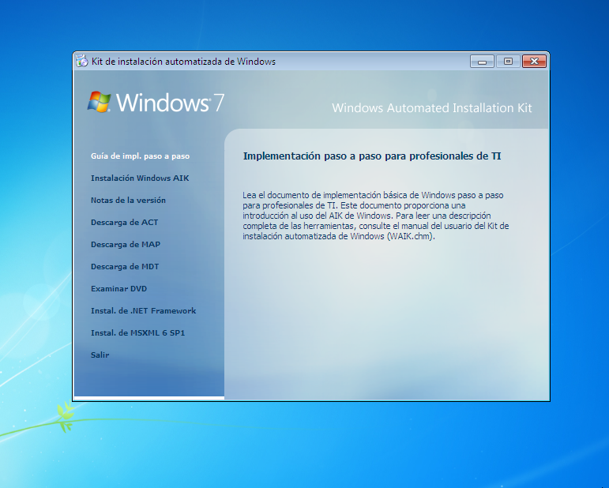
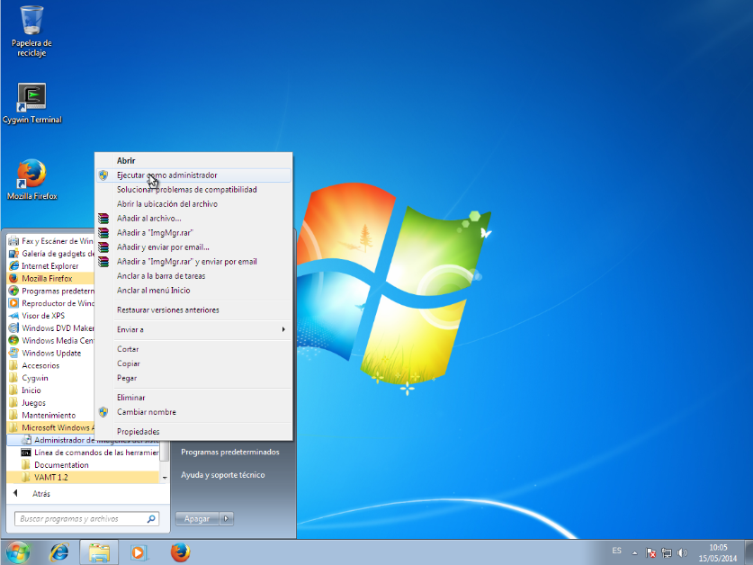
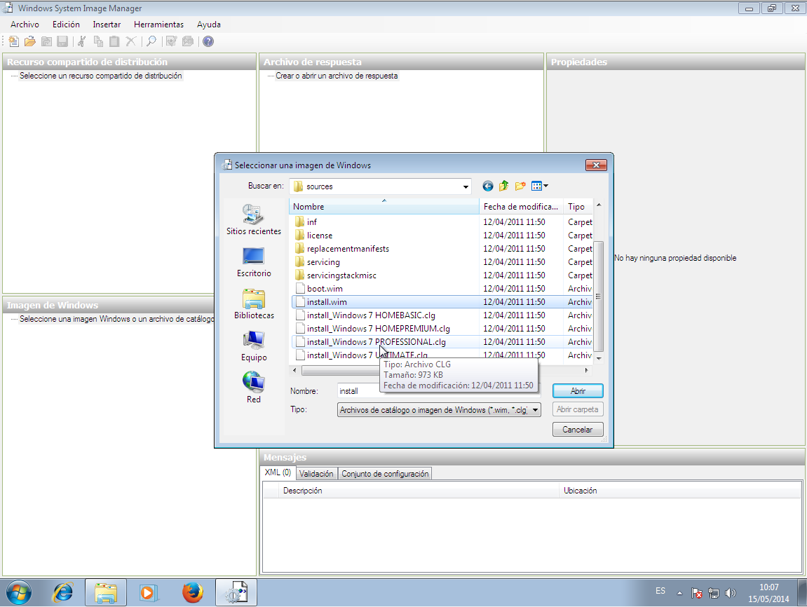
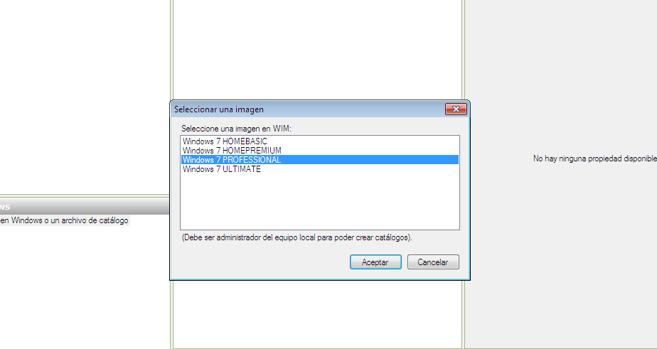
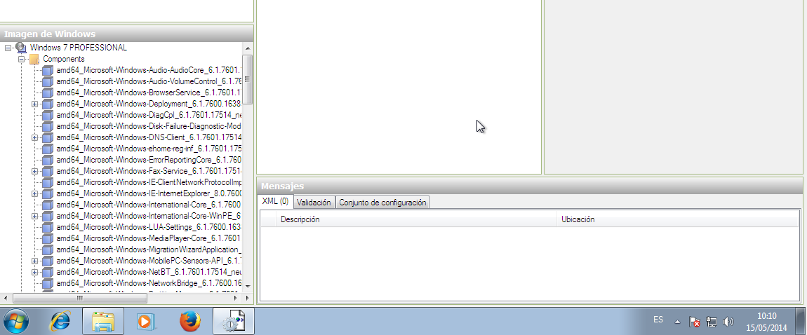
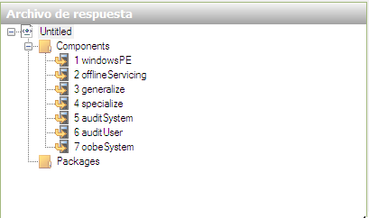
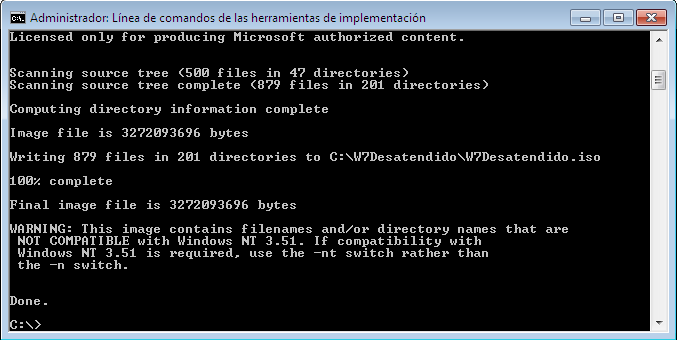
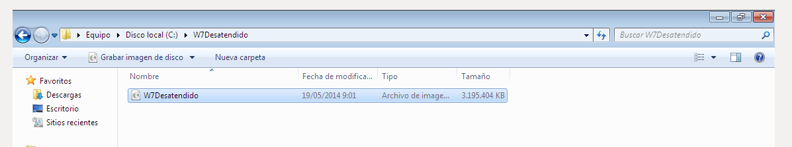

- Módulo: Sistemas Operativos
- Título del trabajo: Instalación desatendida
- Componentes del grupo: Abel García García
- Curso Académico: 2013/2014
- Fecha de entrega: 22 de Mayo de 2014
Lo primero que hacemos es descarga el programa: Kit de instalación Automatizada de Windows 7. Y la instalan elegimos el windows AIK.

Lo segundo es descargar una iso del windows 7 y si la tienen la descomprimen en una carpeta.
Vamos al menu de inicio> a todos los programas> Microsoft Windows AIK> Administrador de imágenes del sistema de Windows

Cuando lo ejecutemos vamos a archivos y a seleccionar imagenes de windows. Cuando la busquemos buscamos un archivo con extension .wim

luego escojemos que version que queramos de Windows 7

y ahora elegimos el sistema que queramos.
lo siguiente ponemos las especificasiones que queramos de la siguiente lista: 
Dependiendo de la especificacion tendremos que ponerla en un grupo o en otro de los siguientes:

Ahora vamos al menu de inicio> a todos los programas> Microsoft Windows AIK> Línea de comandos de las herramientas de implementación
cuando lo ejecutemos lo hacemos como administradores y se nos abrira una consola como esta:
cuando eso pase ponemos el siguiente comando para comprimirla y guardarlo como una ISO :oscdimg –n –m –bRuta_de_directorio\boot\etfsboot.com Ruta_de_directorio Ruta_de_directorio_ a_guardar\ Nombre_de_imagen.iso
Esta practica es muy util porque podemos crear una ISO y porner las espisicaciones que queramos o cuando estemos trabajando poner las que nos dija el jefe. Y cuando la tengamos nos dejara tiempo para otras cosas.